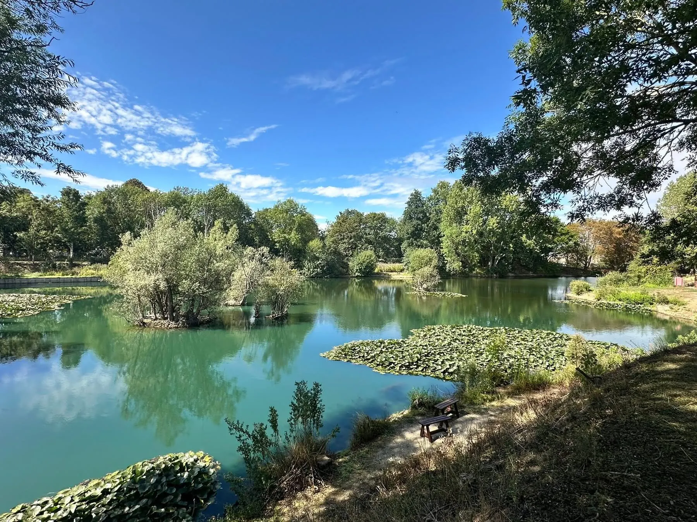

Angling for wellbeing
At Plan B Angling CIC, we believe fishing is about more than catching fish.
Time spent beside the water can provide space to unwind, reconnect with nature, develop friendships and support positive mental wellbeing.
Our aim is to provide a welcoming environment where people of all backgrounds can enjoy the benefits of angling and being part of a community.
Community fishing, not commercial fishing
Plan B Angling CIC is a not-for-profit community interest company operating a mixed coarse fishery in Bury St Edmunds.
Any surplus is reinvested into the fishery, its facilities and fish stocks. The directors are fishing members too: they pay the same fees as everyone else and receive no payment for running the fishery.

What you can expect
Carp, grass carp, tench, perch, bream, roach, Wels catfish and more.
Numbers are controlled to avoid overcrowding and protect the peaceful character of the fishery.
Secure access from Fornham Road. Pre-arranged visitors must be hosted or escorted.
Interested in joining?
Applications are welcome even when the fishery is at capacity. Suitable applicants can join the waiting list and will be contacted as places become available.
Plan B is strictly catch and release. Fish must not be removed from the water under any circumstances.